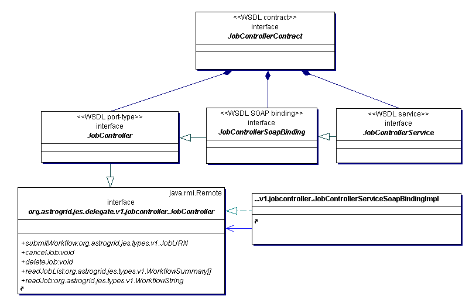

Class Diagram JobController
Class Diagram JobController
This service has a compile-time contract. The WSDL has been generated to match the service-definition interface and is now maintained separately as a file in the code base.
The run-time contract is bassed on the compile-time contract, with changes to the endpoint URL in the WSDL service.
Interface Nodes
JobController
JobControllerContract
JobControllerService
JobControllerSoapBinding
Shortcuts to Elements
 of ClassDiagram jobcontroller
of ClassDiagram jobcontroller Interface org.astrogrid.jes.delegate.v1.jobcontroller.JobController
Interface org.astrogrid.jes.delegate.v1.jobcontroller.JobController of ClassDiagram jobcontroller
Class org.astrogrid.jes.delegate.v1.jobcontroller.JobControllerServiceSoapBindingImpl